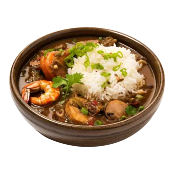

Alright, you ready to make a proper, fiery gumbo, Hells Kitchen style? Let’s dive right in:
Authentic New Orleans Gumbo
This recipe is a firecracker. Made with a dark roux, fresh vegetables, chicken, sausage, and shrimp—all served over rice. Perfect for when you need something hearty.
Ingredients:
- 1 cup all-purpose flour, heaping
- 2/3 cup vegetable or canola oil
- 1 bunch celery, diced (leaves included)
- 1 green bell pepper, diced
- 1 large yellow onion, diced
- 1 bunch green onions, finely chopped
- 1 bunch fresh parsley, finely chopped
- 2-3 cloves garlic
- 1-2 tablespoons Cajun seasoning
- 6-8 cups chicken broth
- 12 ounces andouille sausages, sliced
- Meat from 1 rotisserie chicken
- 2 cups precooked shrimp
- Cooked white rice for serving
Instructions:
- Make the Roux: Get your large pot out. Combine flour and oil, cooking on medium-low. Stir constantly for 30-45 minutes. Not kidding. Watch it turn dark as chocolate, thick like dough. Don’t let it burn!
- Chop Those Veggies: Celery, bell pepper, onions, green onions, parsley—chop them good and fine. You want that freshness to come through in every bite.
- Brown the Sausage: Slice up that sausage and get it in a hot skillet. Single layer. Brown one side, then flip each slice. Nice and even.
- Combine in Pot: Transfer everything to your large pot. Add chicken broth, your chopped veggies, parsley, garlic, and roux. Skim any foam off the top. Stir in Cajun seasoning.
- Add Meat: Add your rotisserie chicken, browned sausage, and shrimp. Taste and season to your liking—more salt, pepper, chicken broth, or Cajun seasoning. The power is in your hands.
- Serve: Ladle this culinary triumph over hot rice. Even better the next day after the flavors have mingled overnight. Serve with a side of homemade potato salad if you're feeling extra indulgent.
This Gumbo is a beast, but once you’ve tamed it, it’s pure gold. Get those taste buds ready for a wild ride. Dig in, and for heaven’s sake, enjoy!
What do you think? Ready to turn up the heat on this recipe?
Other Recipes:
Carbonara
Chocolate Cake